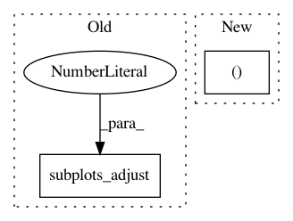

f25d4df0127537d57d4d7f7cd3fa52ca31ffa3ff,examples/03_connectivity/plot_signal_extraction.py,,,#,29
Before Change
x_ticks = plt.xticks(range(len(labels) - 1), labels[1:], rotation=90)
y_ticks = plt.yticks(range(len(labels) - 1), labels[1:])
plt.gca().yaxis.tick_right()
plt.subplots_adjust(left=.01, bottom=.3, top=.99, right=.62)
plt.suptitle("No confounds", size=27)
plt.show()
After Change
// Mask the main diagonal for visualization:
np.fill_diagonal(correlation_matrix, 0)
fig, ax = plt.subplots(1, 1, figsize=(10, 10))
plot_matrix(correlation_matrix, ax=ax, labels=labels, cmap="RdBu_r",
vmax=0.8, vmin=-0.8)
plt.title("No confounds", size=27)
In pattern: SUPERPATTERN
Frequency: 3
Non-data size: 2
Instances
Project Name: nilearn/nilearn
Commit Name: f25d4df0127537d57d4d7f7cd3fa52ca31ffa3ff
Time: 2017-07-28
Author: moritz.boos@uni-oldenburg.de
File Name: examples/03_connectivity/plot_signal_extraction.py
Class Name:
Method Name:
Project Name: scikit-learn/scikit-learn
Commit Name: b4db36d337a4ff83f1bcb37c5a8c615d3134d372
Time: 2020-05-20
Author: jliu176@gmail.com
File Name: examples/covariance/plot_mahalanobis_distances.py
Class Name:
Method Name:
Project Name: daavoo/pyntcloud
Commit Name: 861d9b291f2402c7f89e05bccf00f446487dd0d0
Time: 2017-03-06
Author: daviddelaiglesiacastro@gmail.com
File Name: pyntcloud/structures/voxelgrid.py
Class Name: VoxelGrid
Method Name: plot_feature_vector